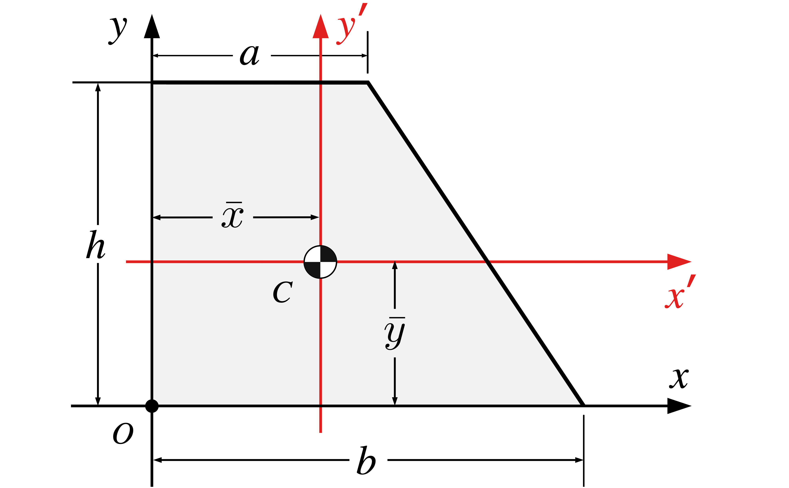

5 Moment of a Force
5.1 Objectives
- Recall.
- Practice the application.
5.2 Definitions
Centre of Gravity (CG): The point where the entire weight of an object acts, and at which gravity can be considered to apply. CG depends on the distribution of mass and gravity.
\[ \bar{x} = \frac{ \sum Moments\ of\ Weights}{\sum Weights} \qquad \bar{y} = \frac{ \sum Moments\ of\ Weights}{\sum Weights} \tag{5.1}\]
\[ \bar{x} = \frac{ \sum Moments\ of\ Volumes}{\sum Volumes} \qquad \bar{y} = \frac{ \sum Moments\ of\ Volumes}{\sum Volumes} \tag{5.2}\]
\[ \bar{x} = \frac{ \sum Moments\ of\ Areas}{\sum Areas} \qquad \bar{y} = \frac{ \sum Moments\ of\ Areas}{\sum Areas} \tag{5.3}\]
Centroid: The geometric center of a shape or object, determined purely by its geometry and independent of mass or weight distribution. The centroid of a uniform shape coincides with the center of gravity because the mass is evenly distributed.
\[ \bar{x} = \frac{ \sum {\bar{x}_i}\ A_i}{\sum A_i} \qquad \bar{y} = \frac{ \sum {\bar{y}_i}\ A_i}{\sum A_i} \tag{5.4}\]
5.3 Properties of Common Shapes
In Table 5.1, all centroids are measured from the indicated origin. You must make the appropriate adjustments when the origin of your coordinate system is located elsewhere.
| Shape | Area | \(\bar{x}\) | \(\bar{y}\) |
|---|---|---|---|
 |
\(A = b h\) | \(b/2\) | \(h/2\) |
| \(\dfrac{bh}{2}\) | \(b/3\) | \(h/3\) | |
|  | \(\dfrac{(a+b) h}{2}\) | \(\dfrac{a^2 +ab + b^2}{3 (a+b)}\) | \(\dfrac{h(2a+b)}{3(a+b)}\) |
 |
\(\pi r^2\) | \(r\) | \(r\) |
| \(\dfrac{\pi r^2}{2}\) | \(r\) | \(\dfrac{4 r}{3 \pi}\) | |
 |
\(\dfrac{\pi r^2}{4}\) | \(\dfrac{4 r}{3 \pi}\) | \(\dfrac{4 r}{3 \pi}\) |
5.4 Centroids using Composite Parts
In this section we will discuss how to find centroids of two-dimensional shapes by first dividing them into pieces with known properties, and then combining the pieces to find the centroid of the original shape. This method will work when the geometric properties of all the sub-shapes are known or can be easily determined. The equations we will use for this approach are
\[ \bar{x} = \frac{ \sum {\bar{x}_i}\ A_i}{\sum A_i} \qquad \bar{y} = \frac{ \sum {\bar{y}_i}\ A_i}{\sum A_i} \]
Consider the complex shape below.
There are often several ways to divide a shape, but it’s best to use as few parts as possible to minimize your computations and opportunities for error. For example, you could choose to break this shape into either a rectangle, a right triangle, and an circular hole:
Once the complex shape has been divided into parts, the next step is to determine the area and centroidal coordinates for each part.
| Part | \(A_i\) | \(\bar{x}_i\) | \(\bar{y}_i\) | \(A_i \bar{x}_i\) | \(A_i \bar{y}_i\) |
|---|---|---|---|---|---|
| 1 | 20 | 2.5 | 2 | 50 | 40 |
| 2 | 12 | 7 | 4/3 | 84 | 16 |
| 3 | -7.0685 | 3 | 2 | -21.2057 | -14.1371 |
| \(\Sigma\) | 24.9315 | — | — | 112.7943 | 41.8629 |
The last two columns of the table contain the first moments of area \(Q_x = A_i \bar{y}_i\) and \(Q_y = A_i \bar{x}_i\text{,}\), and are easily filled in by multiplying the values in columns two to four. Be sure to attend to positive and negative signs when multiplying. Note that the moment of area with respect to the \(x\) axis uses the distance from the \(x\) axis, which is \(\bar{y}_i\text{,}\), and vice-versa.
\[ \bar{x} = \frac{Q_y}{A} = \frac{112.8}{24.93} = {4.52}\ cm \] \[ \bar{y} = \frac{Q_x}{A} = \frac{41.86}{24.93} = {1.692}\ cm \]
Finally, plot the centroid \((\bar{x}, \bar{y})\) on the diagram. If you have made a calculation error it will usually be obvious, because the centroid location won’t “feel right.”
5.5 Second Moment Calculations
The second moment, or moment of inertia, measures how an area or mass is distributed about an axis. Below are the key concepts and formulas.
5.5.1 1. General Formula
The second moment of area about the (x)-axis or (y)-axis is: \[ I_x = \int_A y^2 \, dA, \quad I_y = \int_A x^2 \, dA \]
5.5.2 2. Polar Moment of Inertia
The polar moment of inertia about the origin is: \[ J = \int_A \left(x^2 + y^2\right) \, dA \]
5.5.3 3. Composite Areas
For a composite area, the total moment of inertia is the sum of the moments of its components: \[ I_{\text{total}} = \sum I_i \] For each component: \[ I_i = I_{c,i} + A_i d_i^2 \]
5.5.4 4. Parallel Axis Theorem
To find the moment of inertia about an axis parallel to the centroidal axis: \[ I = I_c + A d^2 \]
5.5.5 5. Moments of Common Shapes
5.5.5.1 Rectangle
For a rectangle with base (b) and height (h): \[ I_x = \frac{b h^3}{12}, \quad I_y = \frac{b^3 h}{12} \]
5.5.5.2 Circle
For a circle with radius (r): \[ I_x = I_y = \frac{\pi r^4}{4}, \quad J = \frac{\pi r^4}{2} \]
5.5.5.3 Triangle
For a triangle with base (b) and height (h): \[ I_x = \frac{b h^3}{36}, \quad I_y = \frac{h b^3}{36} \]
5.6 Derivation of the Moment of Inertia of a Rectangle About its Centroidal Axis
We calculate the moment of inertia of a rectangle about its centroidal \(x\)-axis. The centroidal axis passes horizontally through the centroid of the rectangle, located at \(y = h/2\) (mid-height of the rectangle).
5.7 1. Moment of Inertia Formula
The formula for the moment of inertia is:
\[ I = \int y^2 \, dA \]
Here:
\(y\): distance from the axis of rotation (centroidal axis in this case),
\(dA\): the infinitesimal area element.
5.8 2. Setup for the Rectangle
The rectangle is centered on the centroidal \(x\)-axis, so the height ranges from \(y = -h/2\) to \(y = h/2\).
The width of the rectangle is \(b\).
The infinitesimal area element is \(dA = b \, dy\).
The integral becomes:
\[ I_{\text{centroidal}} = \int_{-h/2}^{h/2} y^2 \, b \, dy \]
5.9 3. Solve the Integral
Factor \(b\) (constant width) outside of the integral:
\[ I_{\text{centroidal}} = b \int_{-h/2}^{h/2} y^2 \, dy \]
The integral of \(y^2\) is:
\[ \int y^2 \, dy = \frac{y^3}{3} \]
Apply the limits \(y = -h/2\) to \(y = h/2\):
\[ I_{\text{centroidal}} = b \left[ \frac{y^3}{3} \right]_{-h/2}^{h/2} \]
Substitute the limits:
\[ I_{\text{centroidal}} = b \left( \frac{(h/2)^3}{3} - \frac{(-h/2)^3}{3} \right) \]
Since \((-h/2)^3 = -(h/2)^3\), the terms simplify:
\[ I_{\text{centroidal}} = b \left( \frac{(h/2)^3}{3} + \frac{(h/2)^3}{3} \right) \]
Combine the terms:
\[ I_{\text{centroidal}} = b \left( \frac{2(h/2)^3}{3} \right) \]
Simplify \((h/2)^3 = \frac{h^3}{8}\):
\[ I_{\text{centroidal}} = b \cdot \frac{2}{3} \cdot \frac{h^3}{8} \]
\[ I_{\text{centroidal}} = b \cdot \frac{h^3}{12} \]
5.10 4. Final Result
The moment of inertia of a rectangle about its centroidal \(x\)-axis is:
\[ I_{\text{centroidal}} = \frac{b h^3}{12} \]
This is the standard formula for the moment of inertia of a rectangle about its centroidal axis.
5.11 Difference Between First Moment and Second Moment
The first moment and second moment are concepts from mathematics and physics, describing how quantities are distributed around a reference point (such as the mean or origin). Below is a detailed explanation:
5.12 1. First Moment
- Definition: The first moment measures the mean or center of mass relative to a reference point.
- Formula: \[ M_1 = \sum (x_i \cdot f_i) \] where \(x_i\) is a value, and \(f_i\) is its weight.
- Physical Interpretation: In mechanics, it determines the center of mass or centroid of an object.
5.13 2. Second Moment
Definition: The second moment measures the spread or dispersion of values around a reference point.
Formula: \[ M_2 = \sum (x_i^2 \cdot f_i) \]
where \(x_i\) is a value, and \(f_i\) is its weight.
Physical Interpretation: In mechanics, the second moment of area (\(I\)) is used to describe an object’s resistance to bending or torsion (e.g., the moment of inertia).
5.14 Key Differences
| Feature | First Moment | Second Moment |
|---|---|---|
| Reference | Measures position relative to a point (e.g., centroid). | Measures spread relative to a point. |
| Physical Meaning | Indicates center or balance point. | Indicates resistance or spread. |
| Example (Physics) | Center of mass. | Moment of inertia. |
In summary, the first moment tells you where things are, while the second moment tells you how far things are spread.Problem Set
5.15 Second Moment Calculations
The second moment, or moment of inertia, measures how an area or mass is distributed about an axis.
5.15.1 General Formula
The second moment of area about the (x)-axis or (y)-axis is:
\[ I_x = \int y^2 \, dA, \quad I_y = \int x^2 \, dA \]
5.16 Derivation of the Moment of Inertia of a Rectangle About Its Base
We calculate the moment of inertia of a rectangle about its base, where the base is along the \(x\)-axis and the height extends from \(y = 0\) to \(y = h\).
5.16.1 1. Moment of Inertia Formula
The formula for the moment of inertia is:
\[ I = \int y^2 \, dA \]
Here: - \(y\): distance from the axis of rotation (the base of the rectangle in this case), - \(dA\): the infinitesimal area element.
5.16.2 2. Setup for the Rectangle
- The rectangle has a width of \(b\) and height \(h\).
- The height extends from \(y = 0\) to \(y = h\).
- The infinitesimal area element is \(dA = b \, dy\).
The integral becomes:
\[ I_{\text{base}} = \int_{0}^{h} y^2 \, b \, dy \]
5.16.3 3. Solve the Integral
Factor \(b\) (constant width) outside of the integral:
\[ I_{\text{base}} = b \int_{0}^{h} y^2 \, dy \]
The integral of \(y^2\) is:
\[ \int y^2 \, dy = \frac{y^3}{3} \]
Apply the limits \(y = 0\) to \(y = h\):
\[ I_{\text{base}} = b \left[ \frac{y^3}{3} \right]_{0}^{h} \]
Substitute the limits:
\[ I_{\text{base}} = b \left( \frac{h^3}{3} - \frac{0^3}{3} \right) \]
Simplify:
\[ I_{\text{base}} = b \cdot \frac{h^3}{3} \]
5.16.4 4. Final Result
The moment of inertia of a rectangle about its base is:
\[ I_{\text{base}} = \frac{b h^3}{3} \]
5.17 Derivation of the Moment of Inertia of a Rectangle About its Centroidal Axis
We calculate the moment of inertia of a rectangle about its centroidal \(x\)-axis. The centroidal axis passes horizontally through the centroid of the rectangle, located at \(y = h/2\) (mid-height of the rectangle).
5.18 1. Moment of Inertia Formula
The formula for the moment of inertia is:
\[ I = \int y^2 \, dA \]
Here:
\(y\): distance from the axis of rotation (centroidal axis in this case),
\(dA\): the infinitesimal area element.
5.19 2. Setup for the Rectangle
The rectangle is centered on the centroidal \(x\)-axis, so the height ranges from \(y = -h/2\) to \(y = h/2\).
The width of the rectangle is \(b\).
The infinitesimal area element is \(dA = b \, dy\).
The integral becomes:
\[ I_{\text{centroidal}} = \int_{-h/2}^{h/2} y^2 \, b \, dy \]
5.20 3. Solve the Integral
Factor \(b\) (constant width) outside of the integral:
\[ I_{\text{centroidal}} = b \int_{-h/2}^{h/2} y^2 \, dy \]
The integral of \(y^2\) is:
\[ \int y^2 \, dy = \frac{y^3}{3} \]
Apply the limits \(y = -h/2\) to \(y = h/2\):
\[ I_{\text{centroidal}} = b \left[ \frac{y^3}{3} \right]_{-h/2}^{h/2} \]
Substitute the limits:
\[ I_{\text{centroidal}} = b \left( \frac{(h/2)^3}{3} - \frac{(-h/2)^3}{3} \right) \]
Since \((-h/2)^3 = -(h/2)^3\), the terms simplify:
\[ I_{\text{centroidal}} = b \left( \frac{(h/2)^3}{3} + \frac{(h/2)^3}{3} \right) \]
Combine the terms:
\[ I_{\text{centroidal}} = b \left( \frac{2(h/2)^3}{3} \right) \]
Simplify \((h/2)^3 = \frac{h^3}{8}\):
\[ I_{\text{centroidal}} = b \cdot \frac{2}{3} \cdot \frac{h^3}{8} \]
\[ I_{\text{centroidal}} = b \cdot \frac{h^3}{12} \]
5.21 4. Final Result
The moment of inertia of a rectangle about its centroidal \(x\)-axis is:
\[ I_{\text{centroidal}} = \frac{b h^3}{12} \]
This is the standard formula for the moment of inertia of a rectangle about its centroidal axis.
5.22 Comparison with the Centroidal Moment of Inertia
The moment of inertia about the base is four times greater than that about the centroidal \(x\)-axis:
\[ I_{\text{base}} = 4 \cdot I_{\text{centroidal}} \]
where:
\[ I_{\text{centroidal}} = \frac{b h^3}{12} \]
5.23 Parallel Axis Theorem
To find the moment of inertia about an axis parallel to the centroidal axis:
\[ I = I_c + A d^2 \]
5.24 Radius of Gyration
The radius of gyration of a body about an axis is a measure of the distribution of its area or mass relative to that axis. It is defined as the distance from the axis at which the total area or mass of the body could be concentrated without changing its moment of inertia.
Mathematically, the radius of gyration k is given by:
where:
I : Moment of inertia about the axis
A : Area of the cross-section (for area calculations)
m : Mass of the body (for mass calculations)
5.25 Difference Between First Moment and Second Moment
The first moment and second moment are concepts from mathematics and physics, describing how quantities are distributed around a reference point (such as the mean or origin). Below is a detailed explanation:
5.26 First Moment
- Definition: The first moment measures the mean or center of mass relative to a reference point.
- Formula: \[ M_1 = \sum (x_i \cdot w_i) \] where \(x_i\) is a value, and \(w_i\) is its weight.
- Physical Interpretation: In mechanics, it determines the center of mass or centroid of an object.
5.27 Second Moment
Definition: The second moment measures the spread or dispersion of values around a reference point.
Formula: \[ M_2 = \sum (x_i^2 \cdot w_i) \]
where \(x_i\) is a value, and \(w_i\) is its weight.
Physical Interpretation: In mechanics, the second moment of area (\(I\)) is used to describe an object’s resistance to bending or torsion (e.g., the moment of inertia).
5.28 Key Differences
| Feature | First Moment | Second Moment |
|---|---|---|
| Reference | Measures position relative to a point (e.g., centroid). | Measures spread relative to a point. |
| Physical Meaning | Indicates center or balance point. | Indicates resistance or spread. |
| Example (Physics) | Center of mass. | Moment of inertia. |
5.29 Second Moments of Common Shapes
| Shape | Second moment (\(I_x\)) | Second moment (\(I_y\)) |
|---|---|---|
 |
\(I_x = \frac{1}{12} b h^3\) | \(I_x = \frac{1}{12} b^3 h\) |
 |
\(I_x = \frac{1}{3} b h^3\) | \(I_x = \frac{1}{3} b^3 h\) |
 |
\(I_x = \frac{\pi}{4} r^4\) | \(I_y = \frac{\pi}{4} r^4\) |
 |
\(I_x = \frac{\pi}{4} (r_2^4-r_1^4)\) | \(I_y = \frac{\pi}{4} (r_2^4-r_1^4)\) |
 |
\(I_x = \frac{\pi}{8} r^4\) | \(I_y = \frac{\pi}{8} r^4\) |
| \(I_x = \frac{\pi}{16} r^4\) | \(I_y = \frac{\pi}{16} r^4\) | |
 |
\(I_x = \frac{1}{12} b h^3\) | |
 |
\(I_x = \frac{1}{36} b h^3\) |
5.30 Further Reading
Read Chapter 7 in Russell, Jackson, and Embleton (2021), Chapter 1 in Hannah and Hillier (1995) and Chapter 2 in Bolton (2021) for additional information.